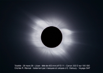

11 Août 1999
Les Eclipses de Soleil
Les éclipses de Soleil, très rares en un lieu donné, ont toujours lieu au moment de la nouvelle Lune, lorsque notre satellite naturel vient occulter le disque du Soleil.
4 Décembre 2002
31 Mai 2003

26 mars 2006 en Libye. Remarquez la magnifique couronne solaire et les jets coronaux
L'éclipse partielle de Soleil du 1er août 2008
Phase partielle de l'éclipse annulaire de Soleil du 20 mai 2012 photographiée dans l'ouest des Etats-Unis.
L'éclipse partielle de Soleil du 21 août 2017 photographiée dans la Manche à 21h 51 H.L. Cette éclipse, totale aux Etats-Unis, était la réplique, après un Saros, de l'éclipse totale de Soleil visible en Normandie le 11 août 1999.